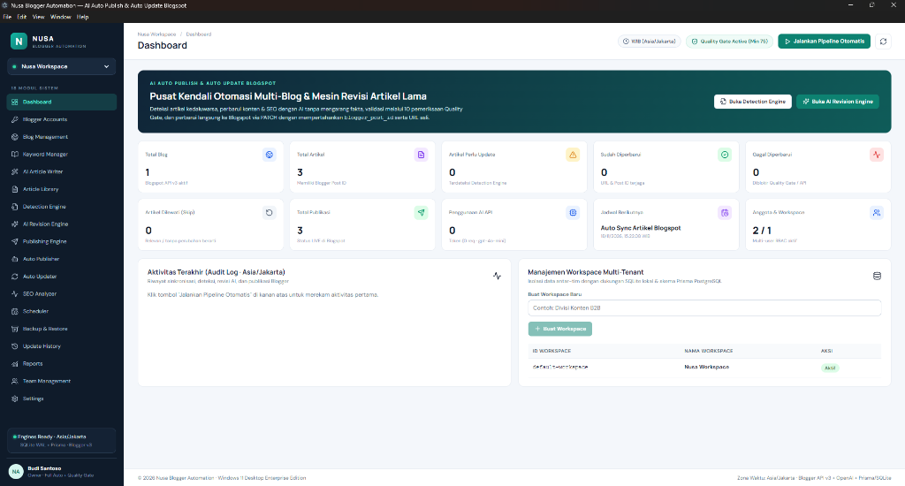
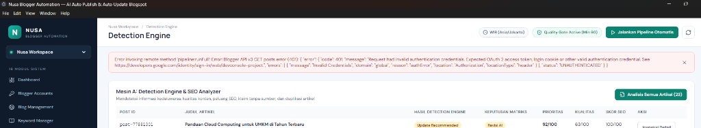
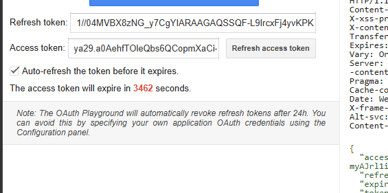
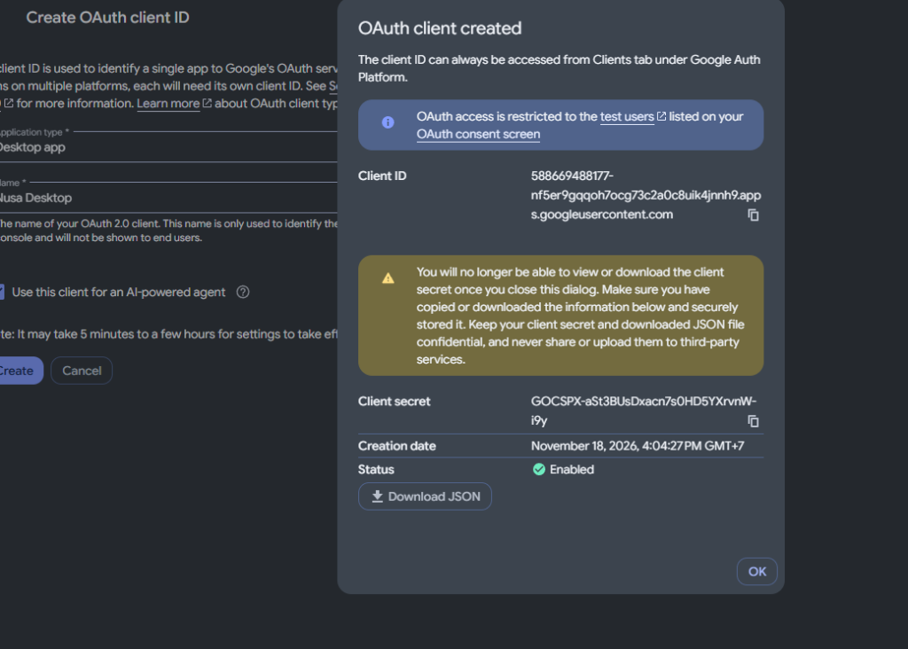

1
Tampilan Dashboard & Indikator Utama
Tinjauan Sistem
Elemen Penting pada Gambar 1:
- 10 Kartu KPI Statistik: Menampilkan total blog terhubung, jumlah artikel yang memiliki
blogger_post_id, artikel yang perlu update, kuota AI, serta jadwal otomatis berikutnya. - Tombol Hijau Kanan Atas (
▶ Jalankan Pipeline Otomatis): Tombol eksekusi sekali klik untuk menjalankan seluruh siklus otomatis (Sync → Deteksi → Revisi AI → Quality Gate → Update Blogspot). - Indikator Zona Waktu: Seluruh jadwal dan riwayat pembaruan berjalan akurat dalam zona waktu WIB (Asia/Jakarta).
2
Konfigurasi AI Engine (Menu Settings)
Kredensial AI Terenkripsi
Cara Mengatur Kredensial AI:
- Klik menu Settings di bagian paling bawah sidebar kiri.
- Model AI: Pilih gpt-4o-mini (sangat cepat, hemat biaya, dan responsif) atau gpt-4o.
- OpenAI API Key: Masukkan kunci rahasia OpenAI Anda yang diawali kode sk-proj-.... Kunci otomatis dienkripsi dengan standar militer AES-256-GCM.
- Skor Minimum Quality Gate: Tetapkan angka 75 (standar ketat agar artikel yang lolos berkualitas tinggi dan bebas halusinasi).
- Klik tombol biru Simpan Pengaturan AI.
3
Google OAuth Playground (Langkah 1: Memilih Scope Blogger)
Otorisasi API Google
Panduan di Google OAuth 2.0 Playground:
- Buka browser dan kunjungi: https://developers.google.com/oauthplayground
- Pada kolom Step 1 Select & authorize APIs di sebelah kiri, cari Blogger API v3.
- Centang scope resmi: https://www.googleapis.com/auth/blogger
- Klik tombol biru besar: Authorize APIs.
- Pilih akun Google Anda (misalnya
bangsalmu@gmail.com), lalu klik Lanjutkan / Izinkan (Allow).
4
Menyalin Refresh Token & Access Token (Langkah 2)
Kunci Auto-Refresh Permanen
Bagian Paling Penting (Perhatikan Kotak Token):
- Refresh Token (KODE SAKTI PERMANEN): Salin kode yang diawali 1//04MVBX8zNG_.... Kode ini TIDAK PERNAH MATI dan merupakan kunci agar aplikasi bisa auto-refresh selamanya tanpa perlu Anda sentuh lagi!
- Access Token (KODE 1 JAM): Kode yang diawali ya29... ini hanya bertahan 3600 detik (1 jam).
- Tombol Abu-Abu "Refresh access token": Jika ingin menguji perpanjangan instan, klik tombol ini dan Access Token akan langsung terbarui dengan masa aktif 1 jam baru.
5
Google Cloud Console (Client ID & Client Secret)
Kredensial OAuth Web Client
Cara Mengambil Client ID & Client Secret:
- Buka Google Cloud Console → APIs & Services → Credentials.
- Pada bagian OAuth 2.0 Client IDs, temukan kredensial Web Application Anda:
Client ID: 588669488177-nf5er8gqqph7ocg7jc2a8c0uik1jnnh8.apps.googleusercontent.com - Klik ikon pensil (edit) atau ikon unduh JSON untuk melihat Client Secret (diawali kode GOCSPX-...).
- Masukkan 3 data ini ke menu Blogger Accounts aplikasi Nusa Blogger:
• Client ID
• Client Secret
• Refresh Token (dari Langkah 4)
→ Klik tombol hijau: + Simpan Akun & Kredensial. Status akun langsung menjadi ⚡ Auto-Refresh Aktif!
6
Blog Management & Eksekusi Master Pipeline
Otomasi Berjalan Sempurna
Menjalankan Pipeline Otomatis:
- Daftar blogspot Anda (
blackphonevadanisholidays) sudah tersambung dan artikelnya tersimpan aman di database lokal. - Klik tombol hijau di sudut kanan atas: `▶ Jalankan Pipeline Otomatis`.
- Apa yang terjadi di balik layar:
1. Sistem menyinkronkan postingan terbaru dari Blogspot via Blogger API v3.
2. Detection Engine menganalisis tahun kedaluwarsa, duplikasi, dan SEO.
3. AI Revision Engine (OpenAI) merevisi konten lama dengan anti-halusinasi & FAQ.
4. 10 Quality Gate memeriksa kelayakan revisi.
5. Backup Snapshot otomatis disimpan sebelum konten disentuh.
6. Publishing Engine mengirim update ke Blogspot via PATCH in-place (URL & Post ID tetap utuh!).